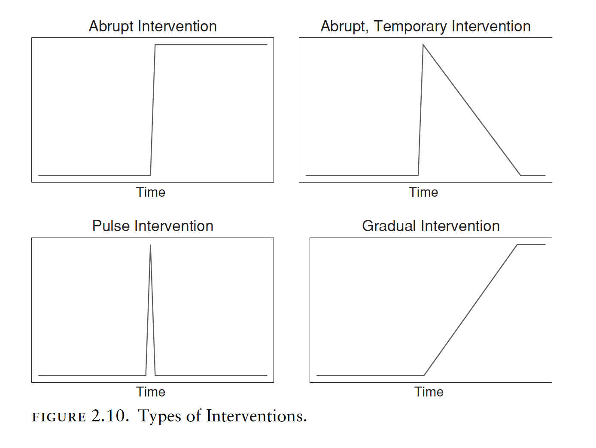

Chapter10 Intervention Analysis
In this chapter we are going to learn about intervention analysis (sometimes also called interrupted time-series analysis) and to see how to conduct a intervention analysis.
Intervention analysis is typically conducted with the Box & Jenkins ARIMA framework and traditionally uses a method introduced by Box and Tiao (1975)8, who provided a framework for assessing the effect of an intervention on a time series under study.
As summarized by Box and Tiao: Given a known intervention, is there evidence that change in the series of the kind expected actually occurred, and, if so, what can be said of the nature and magnitude of the change?. In other words Intervention analysis estimates the effect of an external or exogenous intervention on a time-series. To conduct such an analysis, it is necessary to know the date of the intervention.
Intervention analysis is a “quasi-experimental” design and an interesting approach to test whether exogenous shocks, such as, for instance, the introduction of a new policy, impact on a time series process in a significant way, that is, by changing the mean function or trend of a time series.
Behind intervention analysis there is the causal hypothesis that observations after a treatment (the “intervention”) have a different level or slope from those before the intervention/interruption.
Besides intervention or interrupted time-series analysis, the analysis can be conducted through the segmented regression method. However, as in the case of traditional regression models applied to time series data, this approach does not take into account the autocorrelated structure of time series. Other methods include more complex computational approaches.
10.1 Types of intervention
There are different types of interventions. For instance, an intervention can have an abrupt impact determining a permanent or temporary change, a sudden and short-lived change due to an event, or a more gradual yet permanent change.

10.2 Intervention analysis with ARIMA
To exemplify an intervention analysis we are going to reproduce the example in the paper Interrupted time series analysis using autoregressive integrated moving average (ARIMA) models: a guide for evaluating large-scale health interventions.
The data to run the analysis can be downloaded here.
The example evaulates the impact of a health policy intervention (an Australian health policy intervention that restricted the conditions under which a particular medicine (quetiapine) could be subsidised). The same methodological process can be applied to evaluate any intervention in any context.
The case study is described as follows:
(…) due to growing concerns about inappropriate prescribing, after January 1, 2014 new prescriptions for this tablet strength could not include refills. Our primary outcome was the number of monthly dispensings of 25 mg quetiapine, of which we had 48 months of observations (January 2011 to December 2014).
Thus, data comprises 48 months of observations, and the date of the intervention is January 1, 2014.
There is also seasonality in the process:
In Australia, medicine dispensing claims have significant yearly seasonality. Medicines are subsidised for citizens and eligible residents through the Pharmaceutical Benefits Scheme (PBS), with people paying an out-of-pocket co-payment towards the cost of their medicines, while the remainder is subsidised. If a person’s (or family’s) total out-of-pocket costs reach the “Safety Net threshold” for the calendar year, they are eligible for a reduced co-payment for the remainder of that year. Thus, there is an incentive for people reaching their Safety Net to refill their medicines more frequently towards the end of the year. Hence, we see an increase in prescriptions at the end of the year, followed by a decrease in January.
The researchers hypothesize the nature of the intervention as follows (see the picture below):
(…) due to the nature of the intervention we postulated there would be an immediate drop in dispensings post-intervention (step change), as well as a change in slope (ramp). Thus, we included variables representing both types of impacts in our model. For both impacts, h = 0 and r = 0.
In the sentence above, h describes when the effect happens while r represents the decay pattern (see the picture below).

First we load the data, converting it to a time series format, and we visualize the time series along with a vertical lines representing the date of the intervention.

Next, we have to create the dummy variables representing our intervention. This can be tricky in R. In this case, the authors convert the time of the ts object in a more human-readable format through the as.yearmon function (this is a zoo function and you can use it by loading the xts library).
## [1] 0 0 0 0 0 0 0 0 0 0 0 0 0 0 0 0 0 0 0 0 0 0 0
## [24] 0 0 0 0 0 0 0 0 0 0 0 0 0 1 1 1 1 1 1 1 1 1 1
## [47] 1 1The above vectors is a dummy variable for the intervention. It has value equal zero before the date of the intervention, and 1 after that.
Next, in this specific case, we also want to create a variable representing a constant increasing change, capturing an increasing effect of the intervention over time. Also in this case the creation of the variable can be a little tricky. We create two vectors by using the rep and the seq function, and concatenate them by using the c function.
The argument of the rep function are two integers x and times (rep(x, times)), and the function creates a vectors that repeat (“rep”) the x values the number of times specified by times. We have 36 months before the intervention, and we assign them the value zero.
## [1] 0 0 0 0 0 0 0 0 0 0 0 0 0 0 0 0 0 0 0 0 0 0 0
## [24] 0 0 0 0 0 0 0 0 0 0 0 0 0Instead, we use the seq function to create a vectors with increasing values. This part of the variable represent a gradual increase after the intervention (we have 12 months of data after the intervention). The function seq takes the three arguments from, to, and by: from and to are the starting and end values of the sequence, by is the increment of the sequence. In our case we create a sequence of values that increases from 1 to 12 by 1.
## [1] 1 2 3 4 5 6 7 8 9 10 11 12To create the variable we need, we concatenate both the function with the c function, as follows:
## [1] 0 0 0 0 0 0 0 0 0 0 0 0 0 0 0
## [16] 0 0 0 0 0 0 0 0 0 0 0 0 0 0 0
## [31] 0 0 0 0 0 0 1 2 3 4 5 6 7 8 9
## [46] 10 11 12We search for an appropriate ARIMA model for the data by using the auto.arima function (forecast package). We include the variables we have created as external regressors.

##
## Ljung-Box test
##
## data: Residuals from Regression with ARIMA(2,1,0)(0,1,1)[12] errors
## Q* = 9.5692, df = 7, p-value = 0.2143
##
## Model df: 3. Total lags used: 10The resulting model is an ARIMA(2,1,0)(0,1,1)[12].
## Series: quet.ts
## Regression with ARIMA(2,1,0)(0,1,1)[12] errors
##
## Coefficients:
## ar1 ar2 sma1 step
## -0.873 -0.6731 -0.6069 -3284.7792
## s.e. 0.124 0.1259 0.3872 602.3362
## ramp
## -1396.6523
## s.e. 106.6329
##
## sigma^2 = 648828: log likelihood = -284.45
## AIC=580.89 AICc=583.89 BIC=590.23We use the information retrieved from the auto.arima function to fit the same ARIMA model to the data, without including the intervention (the variables we created), using just the data up to the date of the intervention (up to January 2014). To do that, we use the window function in order to restrict the set of data we consider, indicating December 2013 as the end of our series.
Next, we forecast the 12 months we didn’t include (starting from January 2014 until the end of the period of observation, December 2014) by using the forecast function (library forecast). The logic behind this operation is to see what would have happened to the series in the absence of the intervention. In other words, we use the prediction as a counterfactual in order to describe a possible effect of the intervention on the series, by determining how the observed values diverge from this forecast.
## quet.ts fc.ts
## Jan 2011 16831 NA
## Feb 2011 17234 NA
## Mar 2011 20546 NA
## Apr 2011 19226 NA
## May 2011 21136 NA
## Jun 2011 20939 NA
## Jul 2011 21103 NA
## Aug 2011 22897 NA
## Sep 2011 22162 NA
## Oct 2011 22184 NA
## Nov 2011 23108 NA
## Dec 2011 25967 NA
## Jan 2012 20123 NA
## Feb 2012 21715 NA
## Mar 2012 24497 NA
## Apr 2012 21720 NA
## May 2012 25053 NA
## Jun 2012 23915 NA
## Jul 2012 24972 NA
## Aug 2012 26183 NA
## Sep 2012 24163 NA
## Oct 2012 26172 NA
## Nov 2012 26642 NA
## Dec 2012 29086 NA
## Jan 2013 24002 NA
## Feb 2013 24190 NA
## Mar 2013 26052 NA
## Apr 2013 26707 NA
## May 2013 29077 NA
## Jun 2013 26927 NA
## Jul 2013 30300 NA
## Aug 2013 29854 NA
## Sep 2013 28824 NA
## Oct 2013 31519 NA
## Nov 2013 32084 NA
## Dec 2013 33160 NA
## Jan 2014 24827 29127.50
## Feb 2014 23285 29671.28
## Mar 2014 23884 31156.37
## Apr 2014 21921 31339.65
## May 2014 22715 33843.48
## Jun 2014 19919 31809.61
## Jul 2014 20560 34498.50
## Aug 2014 18961 34774.18
## Sep 2014 18780 33302.09
## Oct 2014 17998 35641.85
## Nov 2014 16624 36184.57
## Dec 2014 18450 37792.03By plotting the data, we can visualize the predicted values in the absence of the intervention (red dashed line) as well as the observed values (blue line). It seems that the health policy considerably impacted the analyzed prescriptions.

Coming back to our initial ARIMA model including the intervention variables, calculating also the confidence intervals and the significance of the coefficients by using the coeftest and the confint function in the lmtest library, we can quantify the impact of the policy.
## Series: quet.ts
## Regression with ARIMA(2,1,0)(0,1,1)[12] errors
##
## Coefficients:
## ar1 ar2 sma1 step
## -0.873 -0.6731 -0.6069 -3284.7792
## s.e. 0.124 0.1259 0.3872 602.3362
## ramp
## -1396.6523
## s.e. 106.6329
##
## sigma^2 = 648828: log likelihood = -284.45
## AIC=580.89 AICc=583.89 BIC=590.23##
## z test of coefficients:
##
## Estimate Std. Error z value Pr(>|z|)
## ar1 -0.87301 0.12396 -7.0427 1.885e-12
## ar2 -0.67314 0.12587 -5.3480 8.893e-08
## sma1 -0.60694 0.38722 -1.5674 0.117
## step -3284.77920 602.33616 -5.4534 4.942e-08
## ramp -1396.65226 106.63287 -13.0978 < 2.2e-16
##
## ar1 ***
## ar2 ***
## sma1
## step ***
## ramp ***
## ---
## Signif. codes:
## 0 '***' 0.001 '**' 0.01 '*' 0.05 '.' 0.1 ' ' 1## 2.5 % 97.5 %
## ar1 -1.1159671 -0.6300565
## ar2 -0.9198339 -0.4264433
## sma1 -1.3658815 0.1520046
## step -4465.3363731 -2104.2220250
## ramp -1605.6488440 -1187.6556789The estimated step change was − 3285 dispensings (95% CI − 4465 to − 2104) while the estimated change in slope was − 1397 dispensings per month (95% CI − 1606 to − 1188). (The figure, ndr) shows the values predicted by our ARIMA model in absence of the intervention (counterfactual) compared with the observed values. This means that the change in subsidy for 25 mg quetiapine in January 2014 was associated with an immediate, sustained decrease of 3285 dispensings, with a further decrease of 1397 dispensings every month. In other words, there were 4682 (3285 + 1397) fewer dispensings in January 2014 than predicted had the subsidy changes not been implemented. In February 2014, there were 6079 fewer dispensings (3285 + 2*1397). Importantly, our findings should only be considered valid for the duration of the study period (i.e. until December 2014).
Box, G. E., & Tiao, G. C. (1975). Intervention analysis with applications to economic and environmental problems. Journal of the American Statistical association, 70(349), 70-79↩︎